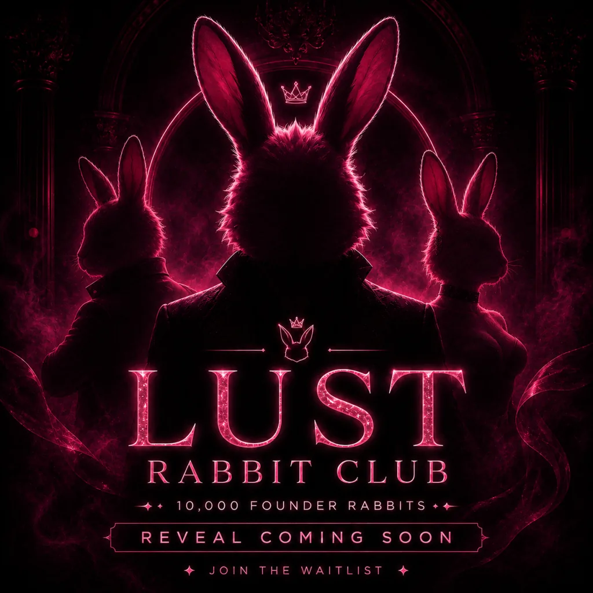
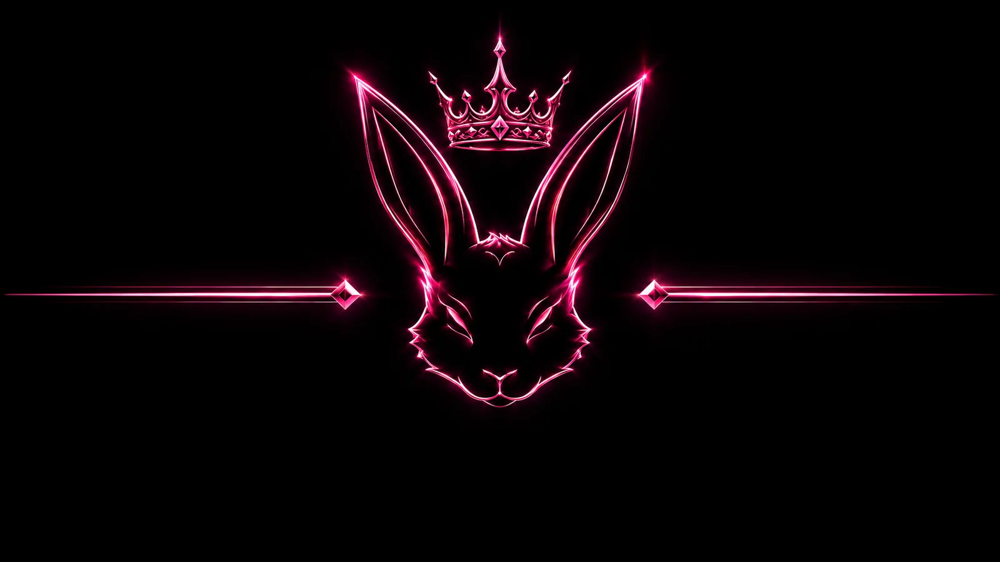

LUST Rabbit Club.
10,000 premium founder Rabbits for the LUST Chain community. Your Rabbit is your identity, your membership pass, and your early access badge inside the LUST ecosystem. 9,700 Rabbits are available for whitelist/public mint, with a transparent 300 Rabbit community reserve.


Your Rabbit will be your key.
The separate LUST Rabbit Club community will be restricted to adult holders of the official collection. Members will connect a wallet, sign a gas-free login message and prove ownership of at least one Rabbit. No password, seed phrase or private key will ever be requested.
The Rabbit is a membership utility. The collection does not promise dividends, guaranteed returns or profit sharing.
Join the early mint list on-chain.
Whitelist registration is free. It does not mint an NFT and it does not charge LUSDT. Your wallet is recorded on-chain in the Whitelist Registry so the LUST team can review and approve wallets for early mint. You only pay the normal LUST network gas fee.
1) Register wallet on-chain → 2) Team reviews wallets → 3) Approved wallets are added to the official NFT contract → 4) Whitelist sale opens → 5) Approved wallets mint for 50 LUSDT.
Pre-launch mint panel.
The official LUST Rabbit Club contract is deployed and verified. Mint stays locked until whitelist or public sale is opened on-chain. Keep testing the hidden metadata and wallet connection before opening sales.
https://platform.lustchain.org/nfts/lust-rabbit-club/hidden.json
Hidden image
https://platform.lustchain.org/nfts/lust-rabbit-club/hidden.webp
The founder club of LUST Chain.
LUST Rabbit Club is the official founder NFT collection of LUST Chain: 10,000 premium Rabbits built for identity, community access and long-term ecosystem participation. Holders receive a founder membership badge, early access to selected LUST products, future holder campaigns and eligibility for future companion activations such as LUST Bunny Pets or Rabbit Serum.
300 Rabbits reserved transparently for the ecosystem.
The 300 reserved Rabbits are not a hidden rarity allocation. They are reserved for community rewards, miners, ambassadors, launch campaigns, partnerships, ecosystem activations and future LUST events.
Clear fund allocation. No hidden destination.
LUST Rabbit Club uses one official NFT contract and one auxiliary Whitelist Registry. The registry only collects early-access wallets on-chain. It does not mint NFTs, does not sell NFTs and does not receive LUSDT from mint.
Mint payments are split by the official NFT contract. Because the treasury and liquidity wallets are currently the same address, 100% is received by the project wallet today, with a public allocation policy of 80% treasury/project and 20% liquidity/market support.
More than a picture. A private membership.
Every authentic Rabbit will unlock the essential club experience. Rarity is not required for entry. Benefits are planned in phases and may evolve according to security, legal readiness and non-financial community voting.
Every Rabbit enters. More Rabbits may unlock status.
The levels below are planned community recognition tiers. Core club access remains available to every wallet holding at least one official Rabbit.
Private profile, holder gate, lounge access and standard member benefits.
Enhanced profile badge and priority for selected community campaigns.
Higher community recognition and priority for limited events.
Top holder status, special recognition and selected premium activations.
Rarity does not control entry. Any authentic LUST Rabbit Club NFT unlocks the club. Tiers do not create dividends or guaranteed financial rewards.
Private, consensual and strictly 18+.
The adult area will launch only after age controls, creator verification, consent records, moderation, privacy protections and secure private storage are operational. The public NFT page remains non-explicit.
How secure holder login will work
1. The member connects a wallet on LUST Chain.
2. The server creates a unique, expiring nonce.
3. The member signs a login message without paying gas.
4. The server verifies the signature and checks balanceOf(wallet) > 0 on the official NFT contract.
5. The server creates a secure, expiring session and protects every private route.
How the collection is planned to support the project and private club.
The NFT contract enforces an 80% Treasury / 20% Liquidity split. The detailed percentages below describe the public administrative policy inside that 100%; the sub-percentages are not separate on-chain transfers today.
Planned use of the 5% supported-marketplace royalty
ERC-2981 royalties are paid only when the secondary marketplace supports and honors them. Royalties are not guaranteed revenue.
Build securely, then expand.
18+ notice, signed wallet login, NFT ownership check, secure session, private dashboard and My Rabbits profile.
Private lounge, profiles, rooms, comments, announcements, polls, events, reports and moderation.
Creator verification, private uploads, protected media links, live sessions and transparent creator compensation.
Bunny Pets, Rabbit Serum, tiers, merchandise, marketplace benefits, events and partner integrations.